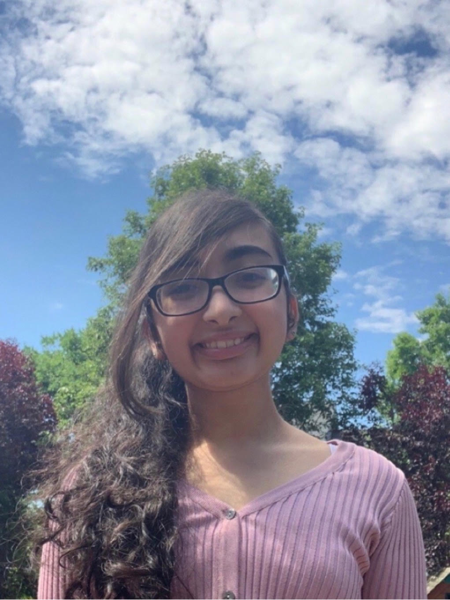
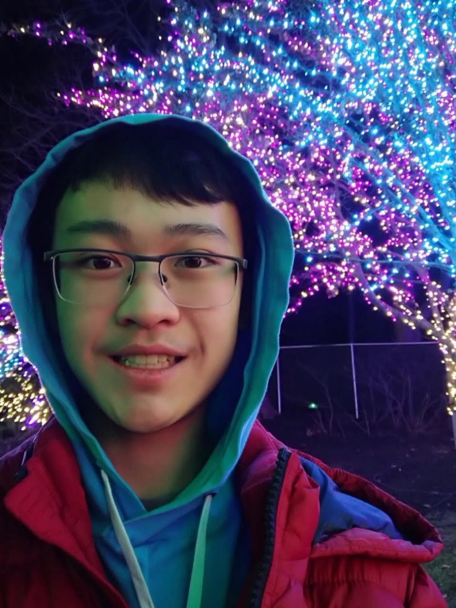
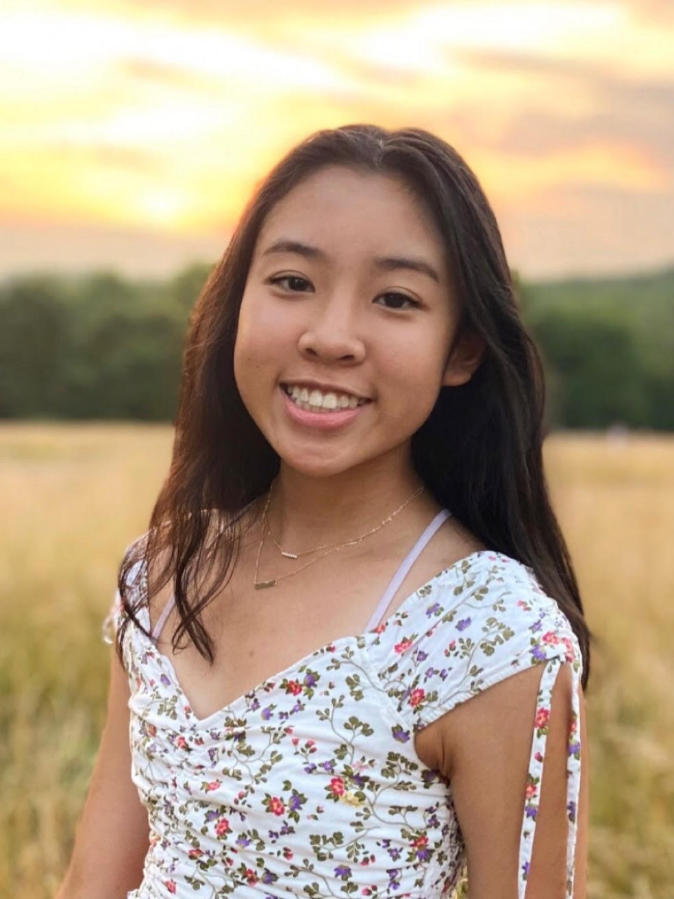
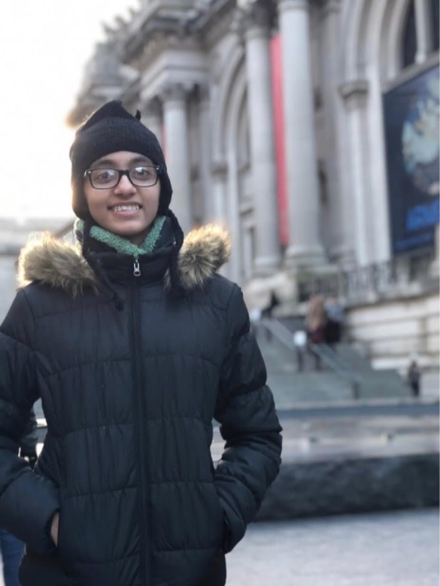

Arya Sapra
Co-founder
Arya Sapra is a rising junior at Thomas Jefferson High School for Science and Technology. Arya is an active member of his school's Lincoln Douglas Debate Team, and currently serves as the Publicist of TJ LD Debate. Arya has a deep passion for biology, and can be found attending meetings of various different clubs related to biology such as Neuroscience Society. Arya also holds a passion for music, and has participated in multiple piano festivals. Overall, he hopes to be able to share his love for biology with other students.
x
Arya Sapra
Co-founder

Isra Satiar
Co-founder
Isra Satiar, currently attending Thomas Jefferson High School for Science and Technology, is a rising junior. She has a strong interest in improving the mental health of her community and serves as the President of TJ Send-a-Smile. Her zeal and energy couple towards her passion for biology, which has motivated her to also lead TJ’s Biology Olympiad club. When she’s not dedicating her time towards these activities, she can be found engaging younger children in STEM through TJ KAST and teaching Quran and Arabic calligraphy at her local mosque.
x
Isra Satiar
Co-founder

Elena Rangelov
Web Dev
Elena is a rising junior at Thomas Jefferson High School for Science and Technology. She loves computer coding and is an officer for her girls’ coding club at school, as well as a member of various women empowerment organizations such as Built By Girls and Women Who Code. Elena is also a part of many environmental justice groups and is working to help our environment 24/7, as well as working with LGBTQ+ support groups like Casa Ruby and SMYAL. She also has a creative side; she’s passionate about piano and enjoys working with many art mediums! Her hard work and friendliness have gotten her wherever she needs to be. She’s always open to talk to anyone with similar interests and is free to answer any questions!
x
Elena Rangelov
Web Dev __

Hasita Ravula
___
Hasita Ravula is a rising junior at Thomas Jefferson High School for Science and Technology. Hasita can be found in her school’s Students vs. Cancer (Relay for Life) club and Tomorrow’s Women in Science and Technology club. In addition to this, she participates in dance outside of school. Hasita has a great interest in biology and is very excited to help other students explore their passion for biology.
x
Hasita Ravula
__

Marina Wang
__
...
x
Marina Wang
__

Jeb Cui
Jeb Cui is a rising Junior at Thomas Jefferson High School for Science and Technology. He has a passion for science and mathematics. Jeb can be found in his school’s Math Team, Intermediate Computer Team, and Physics Team, and he has attended numerous meetings and guest lectured for the Biology Olympiad club. He loves teaching children and getting them excited about STEM, and on weekends, he enjoys teaching computer science to younger students at his local Chinese school. Outside of academics, he has participated in his school’s cross country team and track and field team.

Kyra Li
Kyra Li is currently a rising junior at Thomas Jefferson High School for Science and Technology. Kyra is an active member of her school’s Biology Olympiad, media, and Future Problem Solvers clubs. Outside of academics, she enjoys playing tennis, and is on her school’s tennis team. Kyra has a strong interest in helping others improve their lives, and has started a project to help people work towards a healthier lifestyle. She also has a passion for biology, and is excited that her knowledge will be used to help younger students discover their interest in biology.

Aneri Shah
Aneri Shah is a rising junior at Thomas Jefferson High School for Science and Technology. She is a member of clubs such as Microbiology club, Future Problem Solvers club, Art club, Codi’s hats, and Japanese Culture club. She also enjoys tutoring students and organizing volunteer opportunities. Aneri loves learning biology and computer science, and wants to teach kids about them. On the weekends, she is a teacher’s assistant at a local Jain school. She plays piano, reads, and dances in her free time.
Keertana Yalamanchili
Keertana Yalamanchili is a rising junior at Thomas Jefferson High School for Science & Technology. She is passionate about biology and mathematics. She actively attends Medical Society, Neuroscience Society, and Biology Olympiad meetings. She is currently the secretary of the Medical Society and Neuroscience Society, and subject coordinator of TJ Peer Tutoring. In her spare time, she enjoys singing and dancing, playing the violin, reading books, and tutoring.
Mentors TBD
Mentors TBD
Mentors TBD
Mentors TBD
Mentors TBD